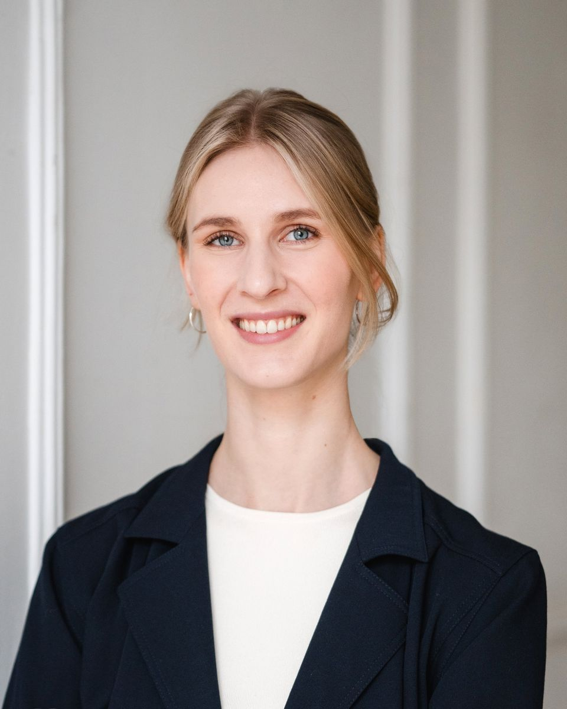

Corinna
Kühnapfel
Neuroaesthetics researcher
I study how art and the spaces we live in move our bodies and shape our emotions, and how these experiences become meaningful and enrich our lives.Researcher at the Arts and Minds Lab, Technische Universität Berlin.
About

I am a postdoctoral researcher working at the intersection of neuroaesthetics, empirical aesthetics, and neurourbanism. I investigate how art and places shape human experience, how they move us emotionally and physically, influence the way we think and perceive the world, and contribute to our wellbeing. Combining behavioural and neurophysiological methods, my research examines the interplay between bodily responses, emotions, cognition, and the environments in which aesthetic experiences unfold. I am currently affiliated with the Arts and Minds Lab, Chair of Philosophy of Cognition, Technische Universität Berlin, where I work in the ERC-funded project Affective Aesthetic Cognitivism and Wonder (AAC_Wonder), investigating how wonder deepens engagement with art and expands understanding. More broadly, I am driven by the question of when and how art experiences become moving, meaningful, or transformative.
Before that, I was a postdoctoral researcher at the Research Platform Neurourbanism, Berlin School of Mind and Brain, Humboldt-Universität zu Berlin, where I examined how public art and urban aesthetics shape people’s perception of the city and their sense of belonging.
My academic background is in Cognitive Science (B.Sc.) and Embodied Cognition (M.Sc.). I completed my PhD in 2023 at the University of Vienna as part of the ARTIS project (Art and Research on Transformations in Individuals and Societies). In my dissertation, I examined the role of the body in art experience, with a focus on installation art, bodily movement in the gallery, and interoception, grounded in embodied cognition and combining behavioral methods with neurophysiological techniques such as fNIRS and eye tracking.
I am a co-founder of EDGE e.V., a non-profit international association of artists and scientists exploring the intersections of art and neuroscience. Through workshops, exhibitions and public programs, EDGE brings the two fields together and shares neuroscience research with the public.
Selected publications
- 2026
Kühnapfel, C., Bentlin, F., Beier, T., Million, A., & Fingerhut, J. (2026). Public art boosts beauty, invitingness, and belonging across urban contexts: A comparative case study of two contrasting sites [Preprint]. SSRN. https://doi.org/10.2139/ssrn.6182532
- 2026
Pelowski, M., Marengo, E., Cotter, K. N., Kühnapfel, C., Speidel, K., & Fingerhut, J. (2026). Designing emotions as mediators of attitude change from socially-focused art exhibitions: Two studies of matched artist/curator intentions and viewer response on the refugee crisis and climate awareness. Empirical Studies of the Arts, 44(1), 195–255. https://doi.org/10.1177/02762374251349376
- 2025
Kühnapfel, C., Trupp, M. D., Pelowski, M., & Fingerhut, J. (2025). On the impact of public art: How engaging a pedestrian-level exhibition improves neighbourhood connectedness and well-being. Wellbeing, Space and Society, 8, Article 100252. https://doi.org/10.1016/j.wss.2025.100252
- 2024
Cabbai, G., Kühnapfel, C., Fingerhut, J., Kaltwasser, L., Prinz, J., & Pelowski, M. (2024). Emotion, embodiment, and aesthetic appraisal: The impact of interoceptive abilities and art type. Psychology of Aesthetics, Creativity, and the Arts. Advance online publication. https://doi.org/10.1037/aca0000716
- 2023
Kühnapfel, C., Fingerhut, J., Brinkmann, H., Ganster, V., Tanaka, T., Specker, E., Mikuni, J., Güldenpfennig, F., Gartus, A., Rosenberg, R., & Pelowski, M. (2023). How do we move in front of art? How does this relate to art experience? Linking movement, eye tracking, emotion, and evaluations in an ecologically-valid gallery setting. Empirical Studies of the Arts. https://doi.org/10.1177/02762374231160000
- 2023
Kühnapfel, C., Fingerhut, J., & Pelowski, M. (2023). The role of the body in the experience of installation art: A case study of visitors’ bodily, emotional, and transformative experience in Tomás Saraceno’s in orbit. Frontiers in Psychology, 14, Article 1192689. https://doi.org/10.3389/fpsyg.2023.1192689
- 2023
Demmer, T. R., Kühnapfel, C., Fingerhut, J., & Pelowski, M. (2023). Does an emotional connection to art really require a human artist? Emotion and intentionality responses to AI- versus human-created art and impact on aesthetic experience. Computers in Human Behavior, 148, Article 107875. https://doi.org/10.1016/j.chb.2023.107875
Selected invited talks
- 2026The City Feels. Emotion, Culture, and What Makes Urban Space WorkTalk with Dr. Nicole Ruta, plus panel on the UNESCO City of Design Network · FORM/Future International Design Conference, Berlin↗
- 2026Awe & WonderTalk · Art & Mindfulness Night Academy, Fotografiska, Berlin
- 2026Neuroaesthetics: Impulses for Design. On the healing effect of designed spacesTalk (in German) and panel · gewerk in the garden 7: Design tut gut, gewerkdesign, Berlin
- 2025Perception, Presence, and Pixels: Neuroscience at the Intersection of Art and TechnologyPanel · REACT 2025, Vienna
- 2024Art, Aesthetics, and Density: Exploring Psychological and Societal Impacts in CitiesSeminar talk · Brain & Cognition Seminar, KU Leuven, Belgium
- 2022Empirical Aesthetics for Installation ArtWorkshop “What is proprioceptive art?” · Heinrich-Heine-Universität Düsseldorf
Selected conference talks
- 2026Street Art and Urban Wellbeing: The Impact of Public MuralsWith C. Brennan · Philosophy of the City conference, Prague
- 2026Public art and urban aesthetics: Empirical approaches to well-being in citiesSymposium “Urban Aesthetics” · International Association of Empirical Aesthetics (IAEA) Congress, Jena
- 2026Touched by Art: Wonder, Understanding, and Well-BeingInspiration Stage · Berlin Science Week, Berlin
- 2024Art in urban spaces: Assessing the psychological and societal effects of two public art exhibitions in BerlinInternational Association of Empirical Aesthetics (IAEA) Congress, Palma, Spain
- 2022Empirical aesthetics for installation art: The role of the body in the experience of Tomás Saraceno’s installation “in orbit”International Association of Empirical Aesthetics (IAEA) Congress, Philadelphia, USA
- 2022How do we move in front of art? Capturing, quantifying, and linking movement patterns, eye-tracking, emotion, and evaluations in an ecologically-valid gallery settingVisual Science of Art Conference (VSAC), Amsterdam
Contact
Want to know more about neuroaesthetics?
Would you like to collaborate on a project?
Want to have me as a speaker?
…or just down for a coffee?
Drop me a line.
© 2026 Corinna Kühnapfel